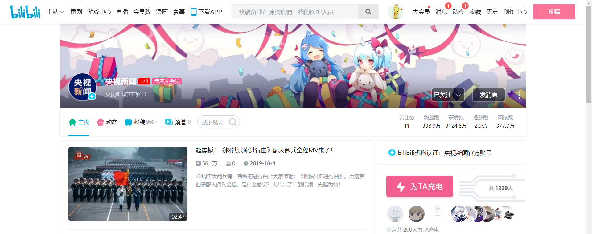

| 央视新闻官方账号 | |
|---|---|
|  | |
| 1958年5月1日19时整，首都北京上空出现了中国电视节目信号。北京仅有的几十台电视接收机的屏幕上，出现了一幅以广播大楼模型作为背景图案，上书“北京电视台”（中央电视台前身）字样的电视画面。新华通讯社为此发出电讯：“中华人民共和国第一座电视台——北京电视台已在5月1日开始试验广播”，中国的电视事业诞生了。 | |
| 小央视频 | |
|---|---|
 |
|
| 小央视频是央视网旗下的原创视频子品牌，以短视频、移动直播为主要生产形态。依托央视网资源背景，由传统媒体成功转型为互联网媒体，争做传统媒体的行业标杆。平台内容以更加贴近年轻人的视角，有趣、有料、有故事的方式解读时代。 | |
| 央视频 | |
|---|---|
 |
|
| “央视频”是中央广播电视总台基于5G+4K/8K+AI等新技术，推出的总台综合性视听新媒体旗舰平台，也是中国首个国家级5G新媒体平台。 | |
| 央视网快看 | |
|---|---|
 |
|
| 央视网新闻频道官方账号 | |
| 观察者网 | |
|---|---|
| 观察者网是上海观察者信息技术有限公司和上海春秋发展战略研究院联合主办的新闻时评集成网站（online news and comments aggregator），旨在以即时综合资讯和特色原创内容为全球中文阅读者提供时政事件的深度报道以及思想领域的全面解读。 | |
| 中国日报 | |
|---|---|
 |
|
| 《中国日报》是中国国家英文日报，创刊于1981年，全球期均发行90余万份，其中，海外期均发行60余万份。《中国日报》作为中国了解世界、世界了解中国的重要窗口，是国内外高端人士首选的中国英文媒体，是唯一有效进入国际主流社会、国外媒体转载率最高的中国报纸，也是国内承办大型国际会议会刊最多的媒体。 | |